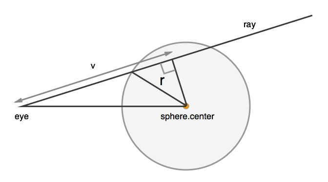

var c = document.getElementById('c'),
width = 640,
height = 480;var c = document.getElementById('c'),
width = 640,
height = 480;Get a context in order to generate a proper data array. We aren't going to
use traditional Canvas drawing functions like fillRect - instead this
raytracer will directly compute pixel data and then put it into an image.
c.width = width;
c.height = height;
var ctx = c.getContext('2d'),
data = ctx.getImageData(0, 0, width, height);We need to define three different kinds of things in 3D space: a camera from which we cast rays into the scene, objects that can be hit by those rays and are drawn into the scene, and lights that change the color of rays, by extension coloring objects.
In this case, we define these objects as simple objects with vectors
defined as {x, y, z} objects.
Our camera is pretty simple: it's a point in space, where you can imagine
that the camera 'sits', a fieldOfView, which is the angle from the right
to the left side of its frame, and a vector which determines what
angle it points in.
var camera = {
point: {
x: 0,
y: 1.8,
z: 10
},
fieldOfView: 45,
vector: {
x: 0,
y: 3,
z: 0
}
};Lights are defined only as points in space - surfaces that have lambert shading will be affected by any visible lights.
var lights = [{
x: -30,
y: -10,
z: 20
}];This raytracer handles sphere objects, with any color, position, radius, and surface properties.
var objects = [{
type: 'sphere',
point: {
x: 0,
y: 3.5,
z: -5
},
color: {
x: 255,
y: 255,
z: 255
},
specular: 0.2,
radius: 3
}];For each pixel in the canvas, there needs to be at least one ray of light that determines its color by bouncing through the scene.
This process is a bit odd, because there's a disconnect between pixels and vectors: given the left and right, top and bottom rays, the rays we shoot are just interpolated between them in little increments.
Starting with the height and width of the scene, the camera's place,
direction, and field of view, we calculate factors that create
width*height vectors for each ray
Start by creating a simple vector pointing in the direction the camera is pointing - a unit vector
var eyeVector = Vector.unitVector(Vector.subtract(camera.vector, camera.point)),and then we'll rotate this by combining it with a version that's turned 90° right and one that's turned 90° up. Since the cross product takes two vectors and creates a third that's perpendicular to both, we use a pure 'UP' vector to turn the camera right, and that 'right' vector to turn the camera up.
vpRight = Vector.unitVector(Vector.crossProduct(eyeVector, Vector.UP)),
vpUp = Vector.unitVector(Vector.crossProduct(vpRight, eyeVector)),The actual ending pixel dimensions of the image aren't important here -
note that width and height are in pixels, but the numbers we compute
here are just based on the ratio between them, height/width, and the
fieldOfView of the camera.
fovRadians = Math.PI * (camera.fieldOfView / 2) / 180,
heightWidthRatio = height / width,
halfWidth = Math.tan(fovRadians),
halfHeight = heightWidthRatio * halfWidth,
camerawidth = halfWidth * 2,
cameraheight = halfHeight * 2,
pixelWidth = camerawidth / (width - 1),
pixelHeight = cameraheight / (height - 1);
console.time('render');
var index, color;
var ray = {
point: camera.point
};
for (var x = 0; x < width; x++) {
for (var y = 0; y < height; y++) {turn the raw pixel x and y values into values from -1 to 1
and use these values to scale the facing-right and facing-up
vectors so that we generate versions of the eyeVector that are
skewed in each necessary direction.
var xcomp = Vector.scale(vpRight, (x * pixelWidth) - halfWidth),
ycomp = Vector.scale(vpUp, (y * pixelHeight) - halfHeight);
ray.vector = Vector.unitVector(Vector.add3(eyeVector, xcomp, ycomp));use the vector generated to raytrace the scene, returning a color
as a {x, y, z} vector of RGB values
color = trace(ray, 0);
index = (x * 4) + (y * width * 4),
data.data[index + 0] = color.x;
data.data[index + 1] = color.y;
data.data[index + 2] = color.z;
data.data[index + 3] = 255;
}
}
console.timeEnd('render');Now that each ray has returned and populated the data array with
correctly lit colors, fill the canvas with the generated data.
ctx.putImageData(data, 0, 0);
Spheres are one of the simplest objects for rays to interact with, since the geometrical math for finding intersections and reflections with them is pretty straightforward.
function sphereIntersection(sphere, ray) {
var eye_to_center = Vector.subtract(sphere.point, ray.point),picture a triangle with one side going straight from the camera point to the center of the sphere, another side being the vector. the final side is a right angle.
This equation first figures out the length of the vector side
v = Vector.dotProduct(eye_to_center, ray.vector),then the length of the straight from the camera to the center of the sphere
eoDot = Vector.dotProduct(eye_to_center, eye_to_center),and compute a segment from the right angle of the triangle to a point
on the v line that also intersects the circle
discriminant = (sphere.radius * sphere.radius) - eoDot + (v * v);If the discriminant is negative, that means that the sphere hasn't been hit by the ray
if (discriminant < 0) {
return;
} else {otherwise, we return the distance from the camera point to the sphere
Math.sqrt(dotProduct(a, a)) is the length of a vector, so
v - Math.sqrt(discriminant) means the length of the the vector
just from the camera to the intersection point.
return v - Math.sqrt(discriminant);
}
}A normal is, at each point on the surface of a sphere or some other object, a vector that's perpendicular to the surface and radiates outward. We need to know this so that we can calculate the way that a ray reflects off of a sphere.
function sphereNormal(sphere, pos) {
return Vector.unitVector(
Vector.subtract(pos, sphere.point));
}Given a ray, let's figure out whether it hits anything, and if so, what's the closest thing it hits.
function intersectScene(ray) {The base case is that it hits nothing, and travels for Infinity
var closest = [Infinity, null];But for each object, we check whether it has any intersection,
and compare that intersection - is it closer than Infinity at first,
and then is it closer than other objects that have been hit?
for (var i = 0; i < objects.length; i++) {
var object = objects[i],
dist = sphereIntersection(object, ray);
if (dist !== undefined && dist < closest[0]) {
closest = [dist, object];
}
}
return closest;
}Given a ray, shoot it until it hits an object and return that object's color,
or Vector.WHITE if no object is found.
function trace(ray, depth) {This is a recursive method: if we hit something that's reflective,
then the call to surface() at the bottom will return here and try
to find what the ray reflected into. Since this could easily go
on forever, first check that we haven't gone more than three bounces
into a reflection.
if (depth > 3) return;
var distObject = intersectScene(ray);If we don't hit anything, fill this pixel with the background color - in this case, white.
if (distObject[0] === Infinity) {
return Vector.WHITE;
}
var dist = distObject[0],
object = distObject[1];The pointAtTime is another way of saying the 'intersection point'
of this ray into this object. We compute this by simply taking
the direction of the ray and making it as long as the distance
returned by the intersection check.
var pointAtTime = Vector.add(ray.point, Vector.scale(ray.vector, dist));
return surface(ray, object, pointAtTime, sphereNormal(object, pointAtTime), depth);
}
function isLightVisible(pt, light) {
return intersectScene({
point: pt,
vector: Vector.unitVector(Vector.subtract(pt, light))
})[1] !== null;
}The trace() function has figured out that something is hit by an ray,
and we're going to figure out what surface that thing has - what color
it'll send back to the camera.
function surface(ray, object, pointAtTime, normal, depth) {
var b = object.color,
c = Vector.ZERO,
lambertCoefficient = 0.8,
reflectance = object.specular,
ambient = Math.max(1 - reflectance - lambertCoefficient, 0),
lambertAmount = 0;Lambert shading is our pretty shading, which shows gradations from the most lit point on the object to the least.
for (var i = 0; i < lights.length; i++) {
var lightPoint = lights[0];
if (!isLightVisible(pointAtTime, lightPoint)) continue;
var contribution = Vector.dotProduct(Vector.unitVector(
Vector.subtract(lightPoint, pointAtTime)), normal);
if (contribution > 0) lambertAmount += contribution;
}Specular is a fancy word for 'reflective': rays that hit objects with specular surfaces bounce off and acquire the colors of other objects they bounce into.
if (object.specular) {
var reflectedRay = {
point: pointAtTime,
vector: Vector.reflectThrough(ray.vector, normal)
};
var reflectedColor = trace(reflectedRay, ++depth);
if (reflectedColor) {
c = Vector.add(c, Vector.scale(reflectedColor, object.specular));
}
}
lambertAmount = Math.min(1, lambertAmount);Ambient colors shine bright regardless of whether there's a light visible - a circle with a totally ambient blue color will always just be a flat blue circle.
return Vector.add3(c,
Vector.scale(b, lambertCoefficient * lambertAmount),
Vector.scale(b, ambient));
}